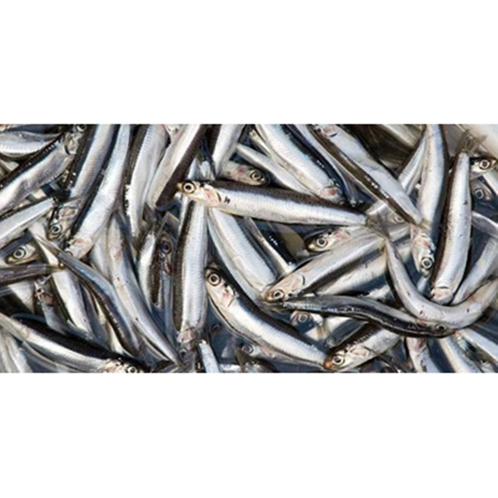

Ikan Teri
Ikan teri merupakan jenis ikan yang berukuran kecil, yang merupakan salah satu hasil laut Indonesia. Banyak yang beranggapan bahwa ikan teri hanyalah dapat diolah menjadi ikan asin saja, namun itu salah besar. Justru yang paling enak adalah ikan teri yang masih segar, dan bukan jenis ikan asin. Masyarakat Indonesia kebanyakan menganggap bahwa ikan teri adalah jenis ikan asin.
Pada dasarnya, ikan teri segar dapat diolah menjadi berbagai macam makanan. Berikut ini adalah beberapa jenis makanan yang merupakan hasil olahan dari ikan teri : Ikan asin Pepes ikan teri Botok ikan teri Ikan teri goreng Sambal ikan teri Sebagai salah satu jenis ikan yang digemari oleh kebanyakan masyarakat Indonesia, ikan teri memiliki banyak manfaat, baik dari segi nutrisi, ekonomis,dan lainnya.
Kandungan Ikan Teri (dalam 100 gram)
| Protein (g) | Kalori (Kal) | Lemak (g) | Besi (mg) | Kalsium (mg) | Fosfor (mg) | Vit A (SI) | Vit B1 (mg) | Kolesterol (mg) | BDD (%) |
|---|---|---|---|---|---|---|---|---|---|
| 10,3 | 210 | 10 | 3,9 | 972 | 253 | 43 | 0,24 | 17 | 100 |
Manfaat Ikan Teri
- Meningkatkan Daya Tahan Tubuh
- Menjaga Kesehatan Tulang
- Menurunkan Risiko Serangan Jantung
- Menjaga Kesehatan Mata
- Menjaga Berat Badan Berlebih
Daya tahan tubuh atau daya imun tubuh memeang perlu sekai. Dengan daya tahan yang tinggi tubuh kita akan terhindar dari serangan penyakit. Untuk meningkatkan daya imun, tubuh, anda memerlukan protein yang tinggi.Seperti halnya mengkonsumsi ikan teri. Kandungan protein yang tinggi pada ikan teri mampu membantu pertumbuhan dan memperbaiki jaringan sel pada tubuh anda. sehingga daya tahan tubuh anda akan semakin meningkat dan terhindar dari segala macam penyakit.
Tulang memiliki fungsi sebagai pembentukan tubuh manusia. Selain itu tulang sangat penting untuk menyangga tubuh kita saat beraktivitas. Entah itu berjalam ataupun berlari. Kita membutuhkan tulang yang kuat.Tulang yang kuat membutuhkan kadar kalsium yang cukup. Untuk mendapatkan kalsium ini anda dapt mengkonsumsi ikan teri. Karena kandungan kalsium ikan teri dapat menjaga kesehatan tulang anda.
Manfaat ikan teri yang pertama adalah menurunkan risiko terkena serangan jantung. Penyakit yang tergolong mematikan ini disebabkan adanya penumpukan kolesterol jahat atau biasa disebut LDL dalam arteri anda. Dengan kandungan lemak tak jenuh ganda yang tinggi pada ikan teri, hal ini mampu mengurangi kolesterol jahat pada arteri. Sehingga kesehatan jantung anda akan tetap terjaga.
Mata merupakan alat indera yang berfungsi melihat apa saja yang ada di depan mata anda. Ketika berjalan saja jika tidak memiliki mata yang sempurna kita akan mengalami kesulitan. Karena itulah kesehatan mata sangat penting kita jaga. Salah satu cara menjaga kesehatan mata adalah dengan mengkonsumsi ikan teri ini. Karena ikan teri mengandung vitamin A yang berguna menjaga kesehatan mata anda.
Bila anda sedang melakukan diet, ikan teri ini dapat juga emnjadi menu tambahan anda. Ikan teri mengandung protein yang tinggi serta kalori yang rendah. Protein ini mampu menimbulkan rasa kenyang, yang nantinya dapat, mencegah anda untuk memakan makanan yang berlebih.